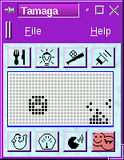
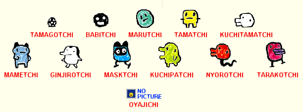

This is the main screen.
These are the official instructions from Ban Dai:
Now that you have your Tamagotchi, you must do these three things:
1) Wake up Tamagotchi from its million light-year sleep by removing the insulating sheet (pull paper tab from side of body).
2) Set the tamagotchi communication screen (Reset operation). Press the reset switch on the rear of the egg with a pointed object. NOTE: Remember not to press the reset switch too hard when using a sharp rod, pencils, sharp pens, etc.
3) Adjust the time difference between Tamagotchi's planet and earth (Timer set). First press the middle button (B) to bring up the timer screen. Use the left button (A) to set the hours and the B button to set the minutes. Once you have set the correct time, press the right button (C) to set the timer. Next, return to the main screen by pressing the B button again.
When you have completed these three steps, a pulsating egg will appear. Tamagotchi will hatch in about 5 minutes.
NOTE: During this time only the timer and reset functions are available.
As soon as Tamagotchi hatches, it will beep at you for attention. This is where the health meter comes in handy. You can determine the mood, health and behavior of Tomagotchi with the health meter. Tamagotchi will need to be fed and played with soon after it hatches. In order to start Tamagotchi on a good growth path, you must take good care of Tamagotchi right from the start.
FEED: Press A button until knife and fork icon is highlighted, then press B. Select either Meal or Snack by pressing the B button to feed Tamagotchi. Be careful not to over feed Tamagotchi; if you do it will refuse to eat.
LIGHT: Press A button until the light bulb icon is highlighted, then press the B button. Select either On or Off by pressing the A button to move the arrow, then press the B button. The light should be turned off when Tamagotchi is sleeping, or it might get restless! Tamagotchi will automaticlly turn the light on when wakes up.
DUCK: Just like real pets, Tamagotchi goes to the bathroom. If droppings appear on the screen, it must be cleaned up right away or Tamagotchi will get sick. Press the A button until the Duck icon is highlighted, then press the B button to flush the screen. Tamagotchi will be very happy after the mess is cleaned up.
HEALTH METER: Check Tamagotchi's health, by pressing the A button until the Health Meter icon is highlighted, then press B button to check Tamagotchi's age/weight, discipline, hunger and happiness. After you have checked all the screens to see if Tamagotchi needs anything, press C to return to the main screen. You should also check this screen if Tamagotchi beeps at you and the "attention" icon is highlighted.
PLAY: Press A button until the bat and ball icon is highlighted, then press B button to begin the game. The object is to guess which way Tamagotchi will turn. To choose left, press the A button, to choose right, press the B button. If you choose the correct direction, Tamagotchi will be happy. There are 5 chances in each game to match Tamagotchi; the more you match, the happier Tamagotchi will be. To stop the game press the C button. After playing, check the happiness meter to see if it went up or down.
MEDICINE: If a "skull" image appears, Tamagotchi is sick and needs medicine. Press A button until the medicine icon is highlighted, then press B. Sometimes 2 or 3 injections are needed before Tamagotchi is well.
ATTENTION: When this icon is highlighted, Tamagotchi needs something. Check the Health Meter, to determine what Tamagotchi needs. If Tamagotchi doesn't need anything, it must be disciplined or the Attention Icon will stay highlighted.
DISCIPLINE: Tamagotchi needs discipline if it:
1) beeps even though it is full and happy
2) won't eat when it is hungry
3) won't play games when it is not very happy. If you neglect to discipline Tamagotchi when needed, it might grow up into an unattractive, bad mannered alien.
There are a total of 4 hearts on the "Happy" and "Hunger" screens and they start out empty. The more hearts that are filled, the better satisfied Tamagotchi is. You must feed or play with Tamagotchi in order to fill the empty hearts. If you keep Tamagotchi full and happy, it will grow into a cute, happy cyber creature. If you neglect Tamagotchi, it will grow into an unattractive alien.
As the meter moves towards the right, it indicates you are raising a well-behaved Tamagotchi.
The higher the discipline scale the less trouble and better behaved Tamagotchi will be. The key to increasing the discipline meter is to make sure you scold Tamagotchi when necessary. If Tamagotchi beeps at you for no reason, you must discipline it.
Tamagotchi needs discipline if it:
- beeps at you even though it is full and happy
- won't eat when it is hungry
- won't play games when it is not very happy
Converts and displays Tamagotchi's growth information in earth units.
- One earth day is equal to about one year for Tamagotchi.
- Tamagotchi will change appearance several times before it reaches its adult form.
- It seems that the shape, personality and life of each Tamagotchi is based on how well you take care of it. Each time you hatch a new Tamagotchi it could grow up to be any one of several adult forms. Tomagotchi will always return to its home planet. How well you care for it helps determine how long Tamagotchi will stay on Earth. When it is time for Tamagotchi to return to its home planet, there is nothing you can do. But, don't worry, you can always hatch another egg.
0-5 YEARS: Try harder next time
6-10 YEARS: Room for improvement
11-16 YEARS: Good job
17-22 YEARS: Excellent
23+ YEARS: Amazing!
In order to hatch another Tamagotchi, press the A and C buttons simultaneously and a new pulsating egg will appear. In about 5 minutes a new Tamagotchi will be born. Maybe you will raise a different version of Tamagotchi this time. Try it and see.
When you want to know the time, press the B button when no icons are highlighted and the time will appear on the screen. To return to the main screen, press the B button again.
In order to re-set the time, press the B button to bring up the timer. Press the A and C buttons simultaneously and the word "SET" will appear on the screen. Then follow the same instructions used to set the timer. Press C button again to return to regular time. Press B again to return to the main screen.
NOTE: Timer cannot be adjusted if Tamagotchi is preparing to return to its home planet.
- When you want to let Tamagotchi return home
- When you have changed batteries
- If Tamagotchi is not functioning properly
- When you want to begin raising a new Tamagotchi
NOTE: Remember, do not press the reset button too hard when
using a pointed object.
After Tamagotchi has hatched, the sound can be turned off by pressing the A and C buttons simultaneously. To restore the sound, press A and C again.
Replace the batteries if the Liquid Crystal Display (LCD) is weak.
1) Loosen the screws on the back side. Remove the cover together with the screws.
2) Take out the old batteries. Insert 2 new LR44 batteries, making sure to match "+" and "-" signs properly. Be sure to use both new batteries, do not mix old and new batteries. Do not mix ALKALINE, STANDARD or RECHARGEABLE BATTERIES. Dispose of used batteries properly.
3) Replace the cover and tighten the screws.
4) Reset the timer and a new Tamagotchi will hatch in 5 minutes.
Copyright Bandai 1996-1997.
The following picture shows the types a tamagotchi can have:
